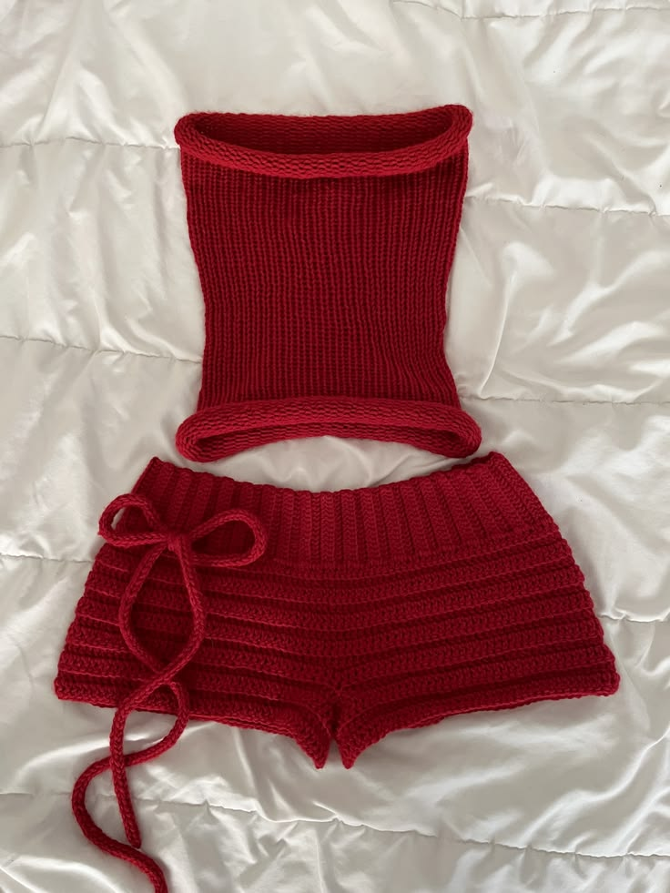
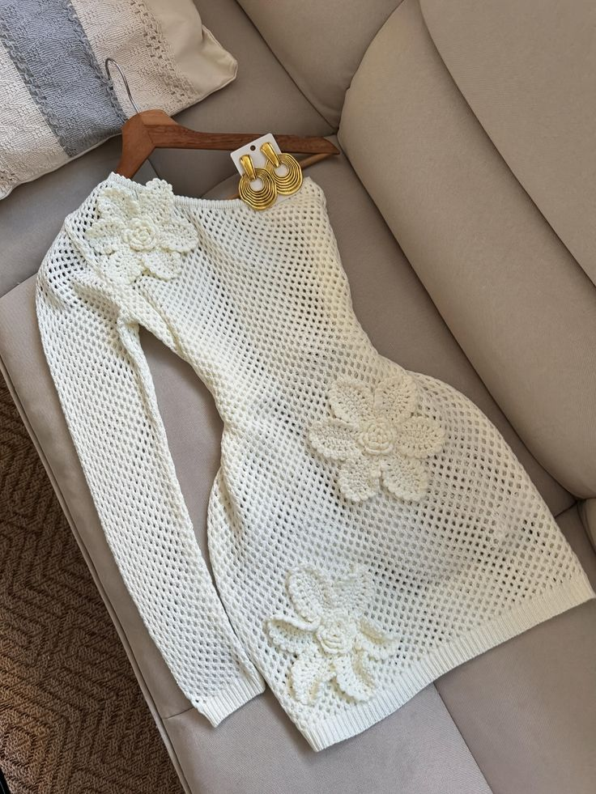
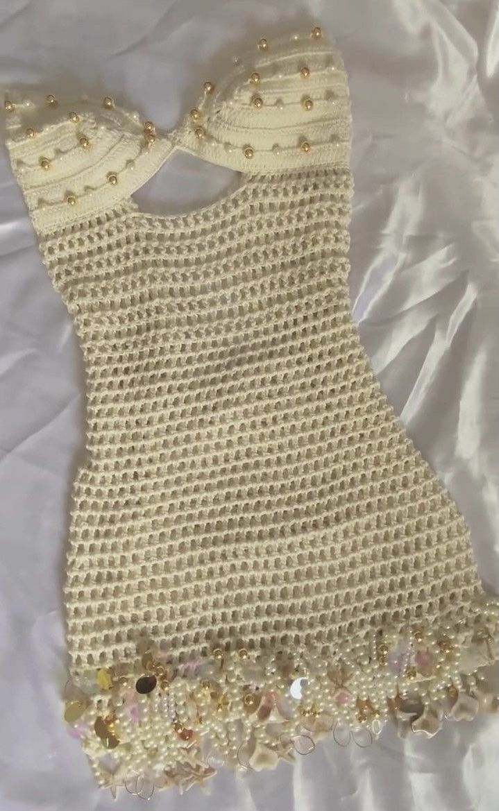

Étudiante en Informatique & Technologies Numériques
Actuellement en **première année d'Informatique et Technologies Numériques**, je pose les fondations de mon futur parcours dans le monde du digital.
J'ai choisi cette voie par pure passion pour l'informatique et tout ce qui touche à la tech. Pour moi, le numérique n'est pas seulement un outil, c'est un terrain de jeu infini où la logique rencontre la créativité.
Ce qui me fascine, c'est de comprendre l'envers du décor : comment les systèmes fonctionnent, comment les données s'organisent et comment on peut créer des solutions à partir d'une simple idée. C'est un secteur en constante évolution, et je veux faire partie de celles qui construisent le monde de demain.
À mes heures perdues, je me passionne pour le crochet et le tricotage. J'adore créer des pièces uniques à la main.



Découvrez les projets concrets que j'ai réalisés au cours de cette année :